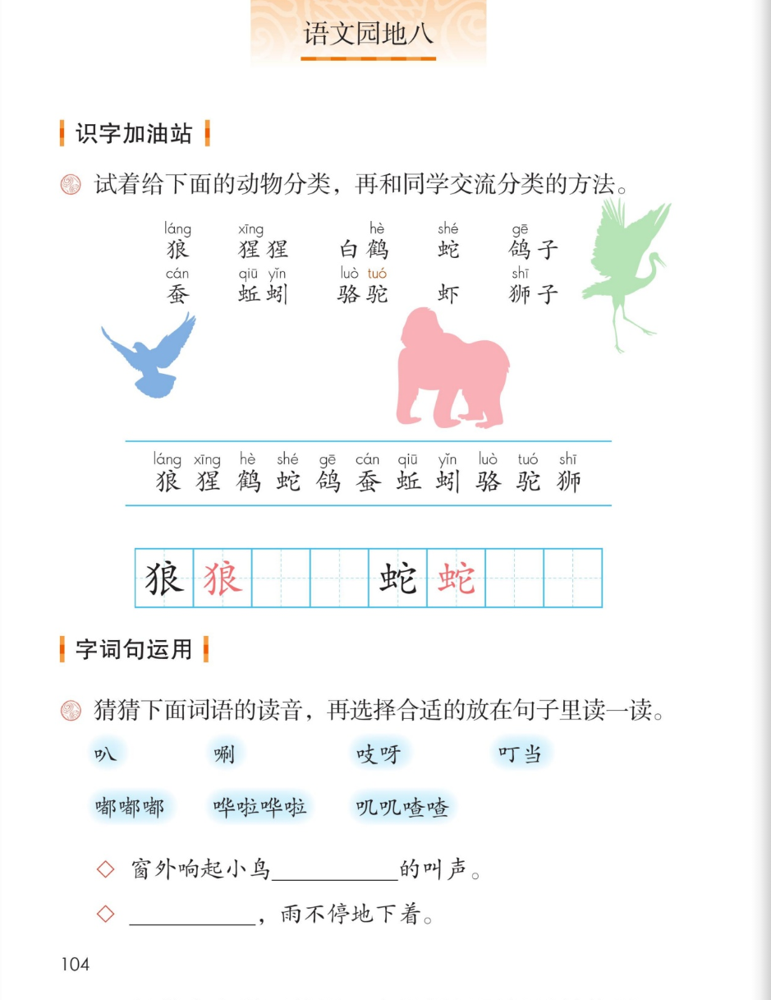
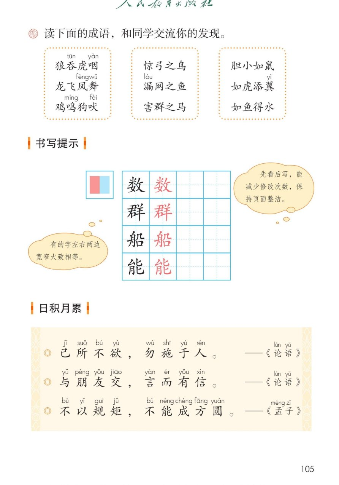
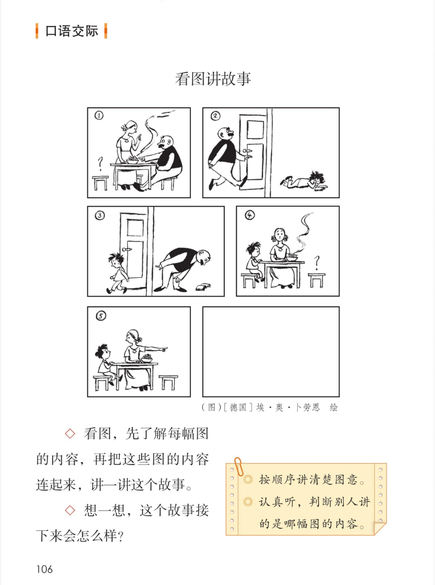
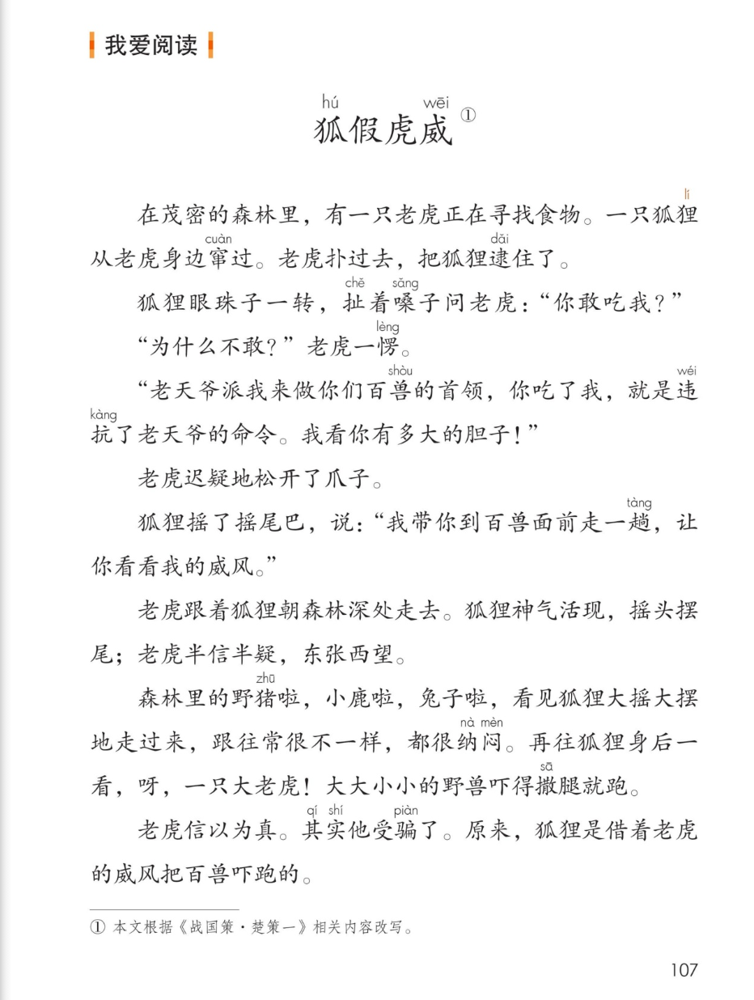

统编版 · 二年级上册 · 第八单元
第八单元 · 单元课件
语文园地八 · 动物分类 · 拟声词 · 成语 · 论语名言 · 看图讲故事 · 狐假虎威
课本第 104~107 页，点哪句读哪句
要认 11 字
会写 2 字
动物 10 个
拟声词 7 个
成语 9 个
名言 3 句
故事 1 篇
闯关 8 题
这个单元学了什么：称赞、纸船和风筝、快乐的小河——都是相处与合作的故事。
语文园地八带大家给动物分类、猜拟声词的读音、积累成语和论语名言，
学写左右等宽的字，看图讲故事，再读寓言狐假虎威。
点一下任一卡片或句子，就能听。
① 识字加油站 · 给动物分类
课本第 104 页
试着分类，再和同学交流分类的方法
参考分类 · 分法不唯一
先自己分一分，再点卡片对一对
本页要认的字 · 11 个
按课本生字条原序，点字听读音
② 写字 · 狼 蛇
课本第 104 页 · 田字格
点卡片听书写要点
③ 猜猜词语的读音，选合适的放句子里读一读
课本第 104 页
先自己猜，再点词卡听一听
把词语放到句子里
先想想填哪个，再点句子对答案（参考，不唯一）
◇窗外响起小鸟＿＿＿＿叽叽喳喳的叫声。
◇＿＿＿＿哗啦哗啦，雨不停地下着。
老师的话：这些词大多带口字旁，都是摹拟声音的词，叫拟声词——读一读，是不是很像那个声音？
④ 读下面的成语，交流你的发现
课本第 105 页
每盒成语都藏着一个秘密
老师的话：第一盒都藏着动物的名字；第二盒都有“之”，都打一个比方；第三盒都有“如”，也是打比方。
⑤ 书写提示 · 数 群 船 能
课本第 105 页
点卡片听书写要点
课本气泡：有的字左右两边宽窄大致相等。
课本气泡：先看后写，能减少修改次数，保持页面整洁。
⑥ 日积月累 · 论语名言
课本第 105 页
点哪句读哪句
己所不欲，勿施于人。——《论语》
与朋友交，言而有信。——《论语》
不以规矩，不能成方圆。——《孟子》
小知识（老师的话）：自己不想要的，就不要强加给别人；和朋友交往，说话要讲信用；
做事要有规矩，没有规矩就画不成方圆。三句话都在教我们怎么做人做事。
⑦ 口语交际 · 看图讲故事
课本第 106 页
图作者是德国的埃·奥·卜劳恩
课本任务：看图，先了解每幅图的内容，再把这些图的内容连起来，讲一讲这个故事。
想一想，这个故事接下来会怎么样？
提示：◎ 按顺序讲清楚图意。 ◎ 认真听，判断别人讲的是哪幅图的内容。
老师的话：第⑥幅图是空白的——故事接下来会怎么样，由你来讲、由你来编。
讲的时候用上突然、连忙这样的词，故事会更生动。
⑧ 我爱阅读 · 狐假虎威
课本第 107 页
点哪段读哪段，想想狐狸的办法妙在哪里
狐假虎威①
课本注释：① 本文根据《战国策·楚策一》相关内容改写。——假是“借”的意思，
狐假虎威就是狐狸借着老虎的威风；后来用这个成语比喻倚仗别人的势力来吓唬人。
⑨ 单元闯关 · 8 题
点选项就判对错，答完自动算分
已经答 0 题，答对 0 题。
课本原页 · 第 104~107 页点图放大

第 104 页 · 动物分类 · 拟声词

第 105 页 · 成语 · 书写提示 · 名言

第 106 页 · 看图讲故事

第 107 页 · 狐假虎威